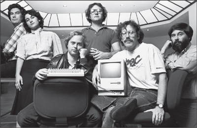

THE REALITY DISTORTION FIELD
Playing by His Own Set of Rules

The original Mac team in 1984: George Crow, Joanna Hoffman, Burrell Smith, Andy Hertzfeld, Bill Atkinson, and Jerry Manock
When Andy Hertzfeld joined the Macintosh team, he got a briefing from Bud Tribble, the other software designer, about the huge amount of work that still needed to be done. Jobs wanted it finished by January 1982, less than a year away. "That's crazy," Hertzfeld said. "There's no way." Tribble said that Jobs would not accept any contrary facts. "The best way to describe the situation is a term from Star Trek," Tribble explained. "Steve has a reality distortion field." When Hertzfeld looked puzzled, Tribble elaborated. "In his presence, reality is malleable. He can convince anyone of practically anything. It wears off when he's not around, but it makes it hard to have realistic schedules."
Tribble recalled that he adopted the phrase from the "Menagerie" episodes of Star Trek, "in which the aliens create their own new world through sheer mental force." He meant the phrase to be a compliment as well as a caution: "It was dangerous to get caught in Steve's distortion field, but it was what led him to actually be able to change reality."
At first Hertzfeld thought that Tribble was exaggerating, but after two weeks of working with Jobs, he became a keen observer of the phenomenon. "The reality distortion field was a confounding mélange of a charismatic rhetorical style, indomitable will, and eagerness to bend any fact to fit the purpose at hand," he said.
There was little that could shield you from the force, Hertzfeld discovered. "Amazingly, the reality distortion field seemed to be effective even if you were acutely aware of it. We would often discuss potential techniques for grounding it, but after a while most of us gave up, accepting it as a force of nature." After Jobs decreed that the sodas in the office refrigerator be replaced by Odwalla organic orange and carrot juices, someone on the team had T-shirts made. "Reality Distortion Field," they said on the front, and on the back, "It's in the juice!"
To some people, calling it a reality distortion field was just a clever way to say that Jobs tended to lie. But it was in fact a more complex form of dissembling. He would assert something—be it a fact about world history or a recounting of who suggested an idea at a meeting—without even considering the truth. It came from willfully defying reality, not only to others but to himself. "He can deceive himself," said Bill Atkinson. "It allowed him to con people into believing his vision, because he has personally embraced and internalized it."
A lot of people distort reality, of course. When Jobs did so, it was often a tactic for accomplishing something. Wozniak, who was as congenitally honest as Jobs was tactical, marveled at how effective it could be. "His reality distortion is when he has an illogical vision of the future, such as telling me that I could design the Breakout game in just a few days. You realize that it can't be true, but he somehow makes it true."
When members of the Mac team got ensnared in his reality distortion field, they were almost hypnotized. "He reminded me of Rasputin," said Debi Coleman. "He laser-beamed in on you and didn't blink. It didn't matter if he was serving purple Kool-Aid. You drank it." But like Wozniak, she believed that the reality distortion field was empowering: It enabled Jobs to inspire his team to change the course of computer history with a fraction of the resources of Xerox or IBM. "It was a self-fulfilling distortion," she claimed. "You did the impossible, because you didn't realize it was impossible."
At the root of the reality distortion was Jobs's belief that the rules didn't apply to him. He had some evidence for this; in his childhood, he had often been able to bend reality to his desires. Rebelliousness and willfulness were ingrained in his character. He had the sense that he was special, a chosen one, an enlightened one. "He thinks there are a few people who are special—people like Einstein and Gandhi and the gurus he met in India—and he's one of them," said Hertzfeld. "He told Chrisann this. Once he even hinted to me that he was enlightened. It's almost like Nietzsche." Jobs never studied Nietzsche, but the philosopher's concept of the will to power and the special nature of the Überman came naturally to him. As Nietzsche wrote in Thus Spoke Zarathustra, "The spirit now wills his own will, and he who had been lost to the world now conquers the world." If reality did not comport with his will, he would ignore it, as he had done with the birth of his daughter and would do years later, when first diagnosed with cancer. Even in small everyday rebellions, such as not putting a license plate on his car and parking it in handicapped spaces, he acted as if he were not subject to the strictures around him.
Another key aspect of Jobs's worldview was his binary way of categorizing things. People were either "enlightened" or "an asshole." Their work was either "the best" or "totally shitty." Bill Atkinson, the Mac designer who fell on the good side of these dichotomies, described what it was like:
It was difficult working under Steve, because there was a great polarity between gods and shitheads. If you were a god, you were up on a pedestal and could do no wrong. Those of us who were considered to be gods, as I was, knew that we were actually mortal and made bad engineering decisions and farted like any person, so we were always afraid that we would get knocked off our pedestal. The ones who were shitheads, who were brilliant engineers working very hard, felt there was no way they could get appreciated and rise above their status.
But these categories were not immutable, for Jobs could rapidly reverse himself. When briefing Hertzfeld about the reality distortion field, Tribble specifically warned him about Jobs's tendency to resemble high-voltage alternating current. "Just because he tells you that something is awful or great, it doesn't necessarily mean he'll feel that way tomorrow," Tribble explained. "If you tell him a new idea, he'll usually tell you that he thinks it's stupid. But then, if he actually likes it, exactly one week later, he'll come back to you and propose your idea to you, as if he thought of it."
The audacity of this pirouette technique would have dazzled Diaghilev. "If one line of argument failed to persuade, he would deftly switch to another," Hertzfeld said. "Sometimes, he would throw you off balance by suddenly adopting your position as his own, without acknowledging that he ever thought differently." That happened repeatedly to Bruce Horn, the programmer who, with Tesler, had been lured from Xerox PARC. "One week I'd tell him about an idea that I had, and he would say it was crazy," recalled Horn. "The next week, he'd come and say, ‘Hey I have this great idea'—and it would be my idea! You'd call him on it and say, ‘Steve, I told you that a week ago,' and he'd say, ‘Yeah, yeah, yeah' and just move right along."
It was as if Jobs's brain circuits were missing a device that would modulate the extreme spikes of impulsive opinions that popped into his mind. So in dealing with him, the Mac team adopted an audio concept called a "low pass filter." In processing his input, they learned to reduce the amplitude of his high-frequency signals. That served to smooth out the data set and provide a less jittery moving average of his evolving attitudes. "After a few cycles of him taking alternating extreme positions," said Hertzfeld, "we would learn to low pass filter his signals and not react to the extremes."
Was Jobs's unfiltered behavior caused by a lack of emotional sensitivity? No. Almost the opposite. He was very emotionally attuned, able to read people and know their psychological strengths and vulnerabilities. He could stun an unsuspecting victim with an emotional towel-snap, perfectly aimed. He intuitively knew when someone was faking it or truly knew something. This made him masterful at cajoling, stroking, persuading, flattering, and intimidating people. "He had the uncanny capacity to know exactly what your weak point is, know what will make you feel small, to make you cringe," Joanna Hoffman said. "It's a common trait in people who are charismatic and know how to manipulate people. Knowing that he can crush you makes you feel weakened and eager for his approval, so then he can elevate you and put you on a pedestal and own you."
Ann Bowers became an expert at dealing with Jobs's perfectionism, petulance, and prickliness. She had been the human resources director at Intel, but had stepped aside after she married its cofounder Bob Noyce. She joined Apple in 1980 and served as a calming mother figure who would step in after one of Jobs's tantrums. She would go to his office, shut the door, and gently lecture him. "I know, I know," he would say. "Well, then, please stop doing it," she would insist. Bowers recalled, "He would be good for a while, and then a week or so later I would get a call again." She realized that he could barely contain himself. "He had these huge expectations, and if people didn't deliver, he couldn't stand it. He couldn't control himself. I could understand why Steve would get upset, and he was usually right, but it had a hurtful effect. It created a fear factor. He was self-aware, but that didn't always modify his behavior."
Jobs became close to Bowers and her husband, and he would drop in at their Los Gatos Hills home unannounced. She would hear his motorcycle in the distance and say, "I guess we have Steve for dinner again." For a while she and Noyce were like a surrogate family. "He was so bright and also so needy. He needed a grown-up, a father figure, which Bob became, and I became like a mother figure."
There were some upsides to Jobs's demanding and wounding behavior. People who were not crushed ended up being stronger. They did better work, out of both fear and an eagerness to please. "His behavior can be emotionally draining, but if you survive, it works," Hoffman said. You could also push back—sometimes—and not only survive but thrive. That didn't always work; Raskin tried it, succeeded for a while, and then was destroyed. But if you were calmly confident, if Jobs sized you up and decided that you knew what you were doing, he would respect you. In both his personal and his professional life over the years, his inner circle tended to include many more strong people than toadies.
The Mac team knew that. Every year, beginning in 1981, it gave out an award to the person who did the best job of standing up to him. The award was partly a joke, but also partly real, and Jobs knew about it and liked it. Joanna Hoffman won the first year. From an Eastern European refugee family, she had a strong temper and will. One day, for example, she discovered that Jobs had changed her marketing projections in a way she found totally reality-distorting. Furious, she marched to his office. "As I'm climbing the stairs, I told his assistant I am going to take a knife and stab it into his heart," she recounted. Al Eisenstat, the corporate counsel, came running out to restrain her. "But Steve heard me out and backed down."
Hoffman won the award again in 1982. "I remember being envious of Joanna, because she would stand up to Steve and I didn't have the nerve yet," said Debi Coleman, who joined the Mac team that year. "Then, in 1983, I got the award. I had learned you had to stand up for what you believe, which Steve respected. I started getting promoted by him after that." Eventually she rose to become head of manufacturing.
One day Jobs barged into the cubicle of one of Atkinson's engineers and uttered his usual "This is shit." As Atkinson recalled, "The guy said, ‘No it's not, it's actually the best way,' and he explained to Steve the engineering trade-offs he'd made." Jobs backed down. Atkinson taught his team to put Jobs's words through a translator. "We learned to interpret ‘This is shit' to actually be a question that means, ‘Tell me why this is the best way to do it.'" But the story had a coda, which Atkinson also found instructive. Eventually the engineer found an even better way to perform the function that Jobs had criticized. "He did it better because Steve had challenged him," said Atkinson, "which shows you can push back on him but should also listen, for he's usually right."
Jobs's prickly behavior was partly driven by his perfectionism and his impatience with those who made compromises in order to get a product out on time and on budget. "He could not make trade-offs well," said Atkinson. "If someone didn't care to make their product perfect, they were a bozo." At the West Coast Computer Faire in April 1981, for example, Adam Osborne released the first truly portable personal computer. It was not great—it had a five-inch screen and not much memory—but it worked well enough. As Osborne famously declared, "Adequacy is sufficient. All else is superfluous." Jobs found that approach to be morally appalling, and he spent days making fun of Osborne. "This guy just doesn't get it," Jobs repeatedly railed as he wandered the Apple corridors. "He's not making art, he's making shit."
One day Jobs came into the cubicle of Larry Kenyon, an engineer who was working on the Macintosh operating system, and complained that it was taking too long to boot up. Kenyon started to explain, but Jobs cut him off. "If it could save a person's life, would you find a way to shave ten seconds off the boot time?" he asked. Kenyon allowed that he probably could. Jobs went to a whiteboard and showed that if there were five million people using the Mac, and it took ten seconds extra to turn it on every day, that added up to three hundred million or so hours per year that people would save, which was the equivalent of at least one hundred lifetimes saved per year. "Larry was suitably impressed, and a few weeks later he came back and it booted up twenty-eight seconds faster," Atkinson recalled. "Steve had a way of motivating by looking at the bigger picture."
The result was that the Macintosh team came to share Jobs's passion for making a great product, not just a profitable one. "Jobs thought of himself as an artist, and he encouraged the design team to think of ourselves that way too," said Hertzfeld. "The goal was never to beat the competition, or to make a lot of money. It was to do the greatest thing possible, or even a little greater." He once took the team to see an exhibit of Tiffany glass at the Metropolitan Museum in Manhattan because he believed they could learn from Louis Tiffany's example of creating great art that could be mass-produced. Recalled Bud Tribble, "We said to ourselves, ‘Hey, if we're going to make things in our lives, we might as well make them beautiful.'"
Was all of his stormy and abusive behavior necessary? Probably not, nor was it justified. There were other ways to have motivated his team. Even though the Macintosh would turn out to be great, it was way behind schedule and way over budget because of Jobs's impetuous interventions. There was also a cost in brutalized human feelings, which caused much of the team to burn out. "Steve's contributions could have been made without so many stories about him terrorizing folks," Wozniak said. "I like being more patient and not having so many conflicts. I think a company can be a good family. If the Macintosh project had been run my way, things probably would have been a mess. But I think if it had been a mix of both our styles, it would have been better than just the way Steve did it."
But even though Jobs's style could be demoralizing, it could also be oddly inspiring. It infused Apple employees with an abiding passion to create groundbreaking products and a belief that they could accomplish what seemed impossible. They had T-shirts made that read "90 hours a week and loving it!" Out of a fear of Jobs mixed with an incredibly strong urge to impress him, they exceeded their own expectations. "I've learned over the years that when you have really good people you don't have to baby them," Jobs later explained. "By expecting them to do great things, you can get them to do great things. The original Mac team taught me that A-plus players like to work together, and they don't like it if you tolerate B work. Ask any member of that Mac team. They will tell you it was worth the pain."
Most of them agree. "He would shout at a meeting, ‘You asshole, you never do anything right,'" Debi Coleman recalled. "It was like an hourly occurrence. Yet I consider myself the absolute luckiest person in the world to have worked with him."